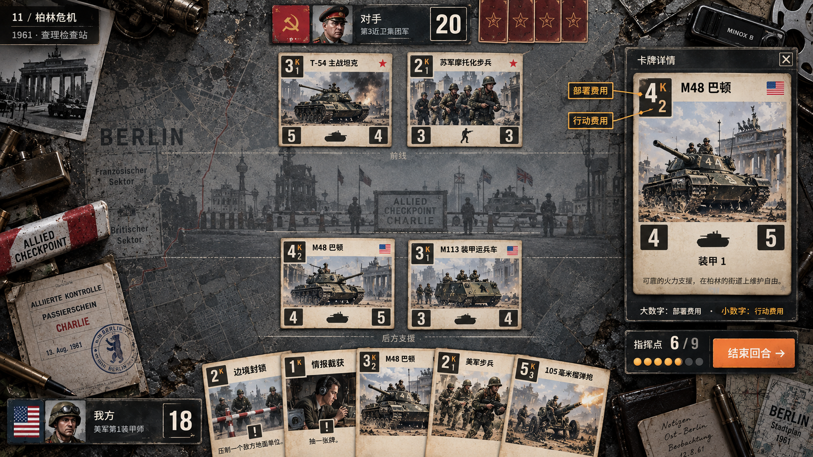
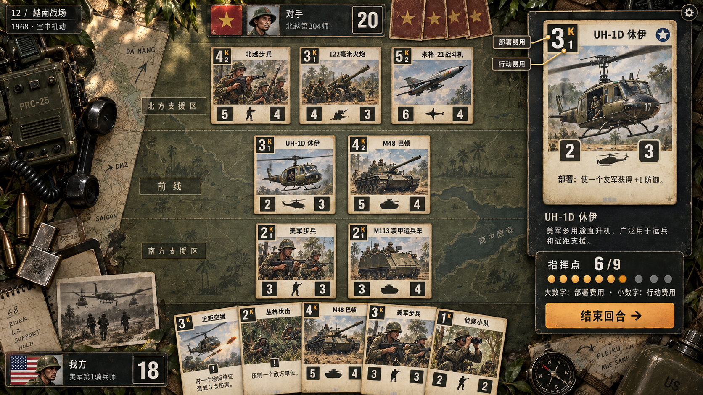
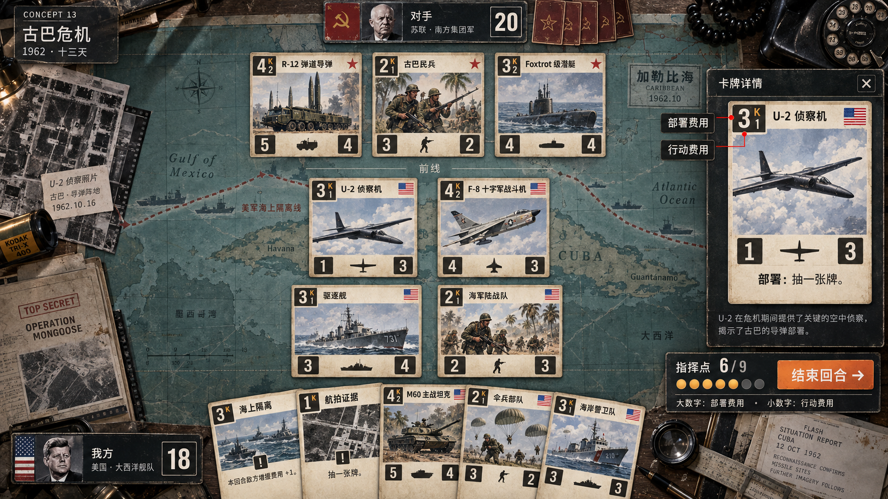
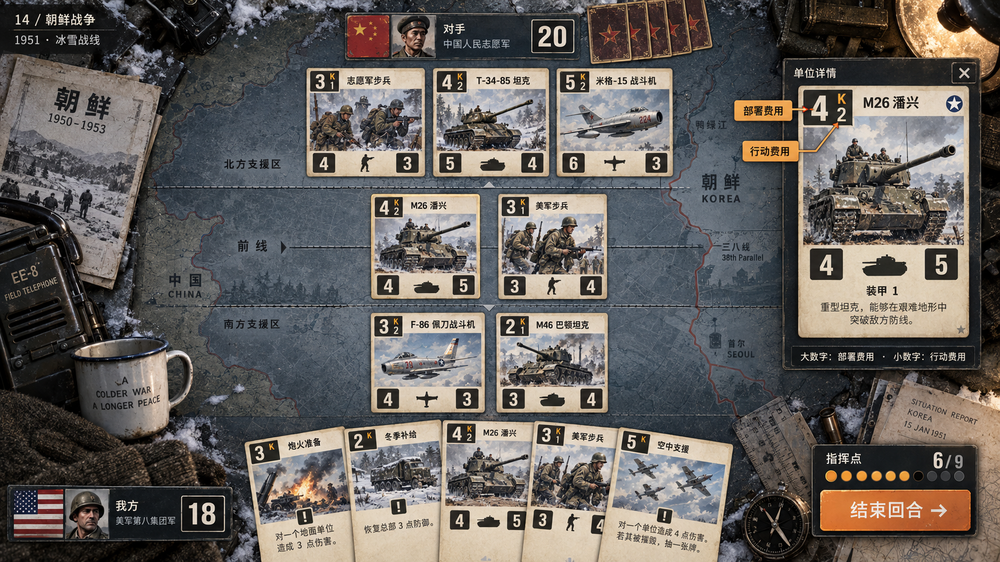
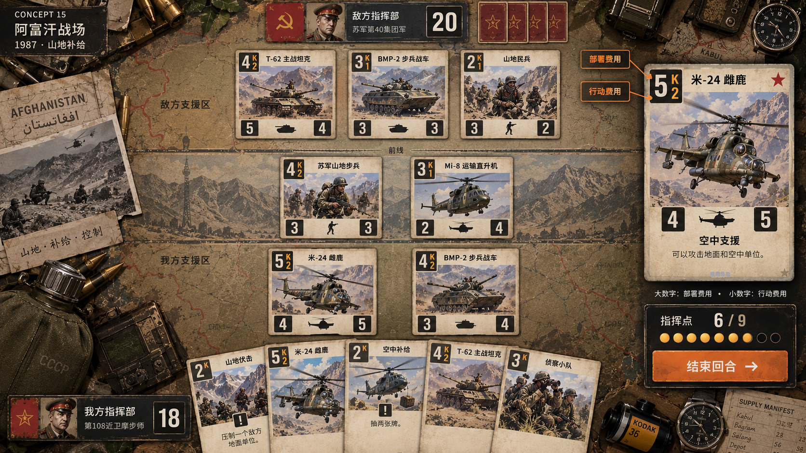
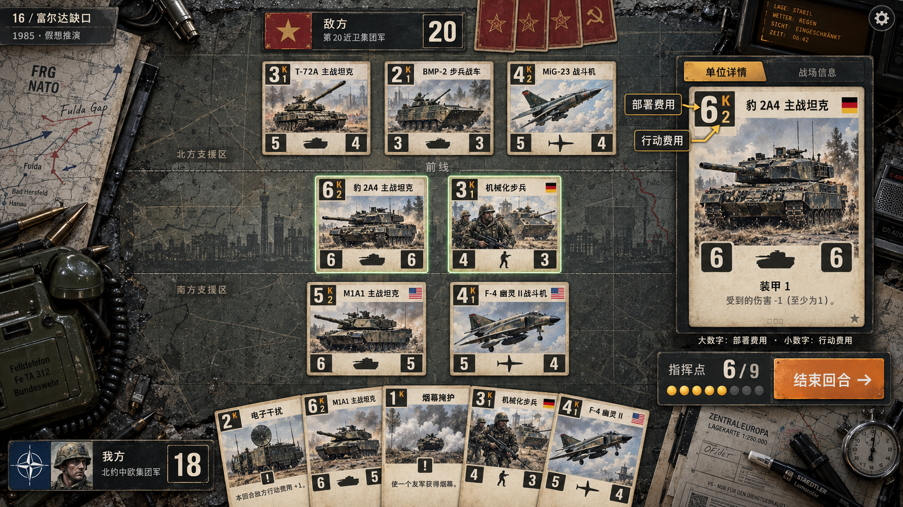
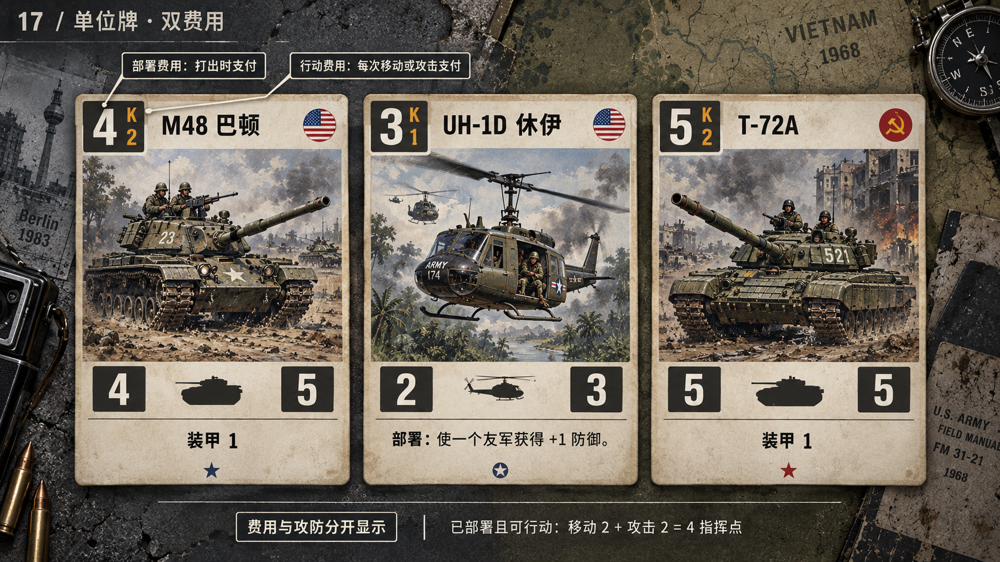
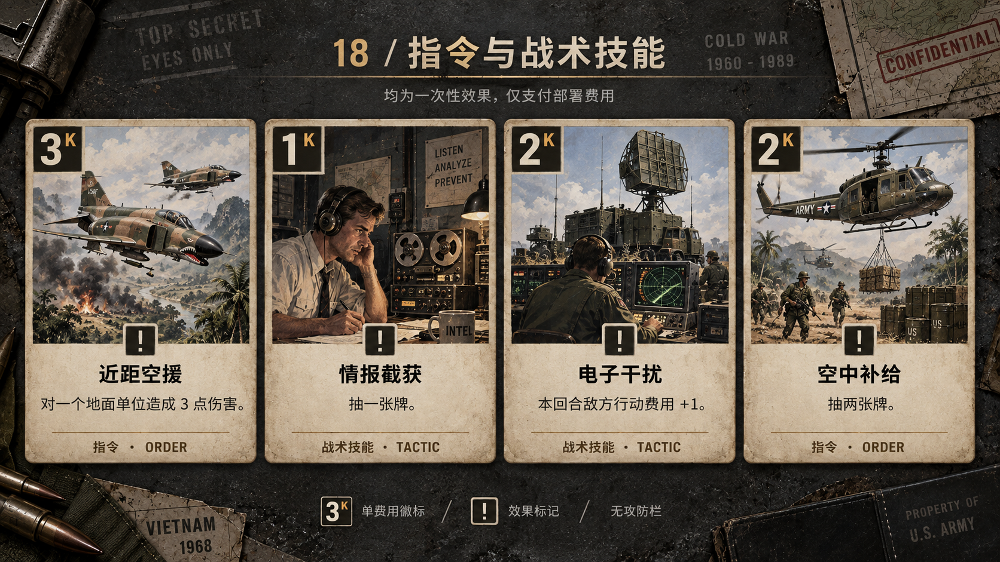
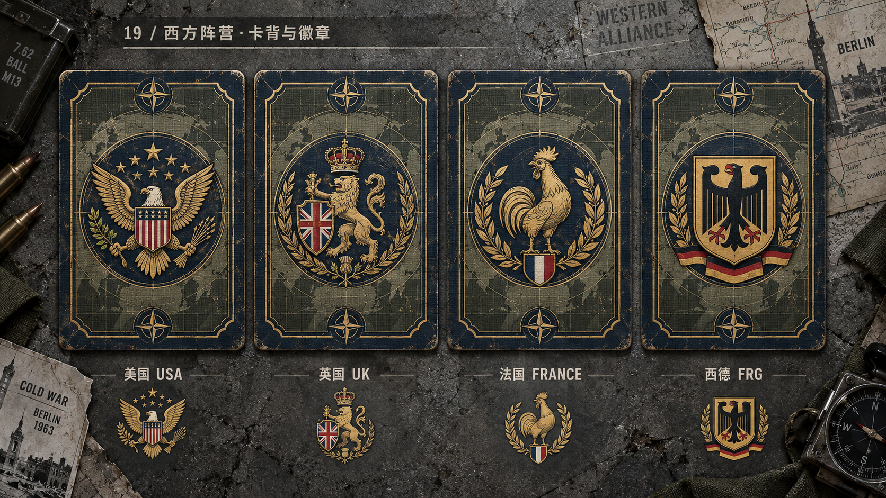
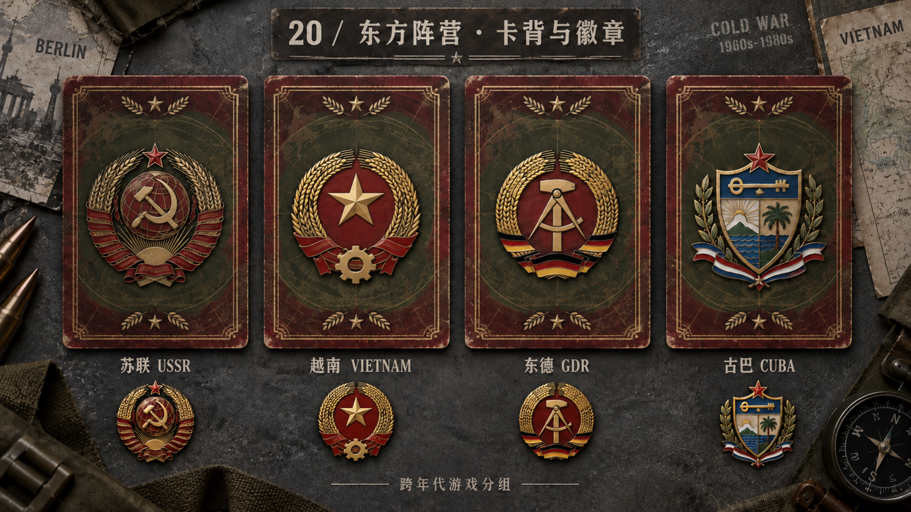

沿用第一轮 05 的水泥灰与 06 的丛林卡其，扩展六个战区、双费用单位牌、单费用指令牌，以及两大阵营的八国卡背。编号接续为 11—20，便于与第一轮一起挑选。

1961 · 水泥灰检查站；通行证、微型相机、野战电话

1968 · 丛林地图台；PRC-25 电台、军牌、水壶与机降照片

1962 · 加勒比海图；U-2 航拍底片、胶片罐、旋转拨号电话

1951 · 冰雪地图台；早期军用电话、羊毛织物与搪瓷杯

1987 · 山地补给台；苏式水壶、侦察照片与补给清单

1985 · 假想推演；装甲单位、地图覆片与模拟终端

M48、UH-1D、T-72A；大数字部署费，小数字行动费

近距空援、情报截获、电子干扰、空中补给；仅部署费

美国、英国、法国、西德；蓝灰织纹与旧金徽章

苏联、越南、东德、古巴；暗红卡框与旧金徽章